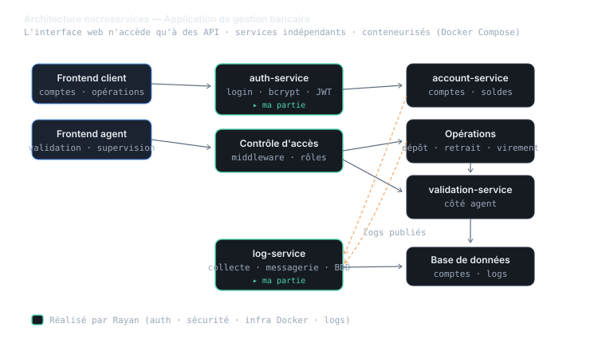
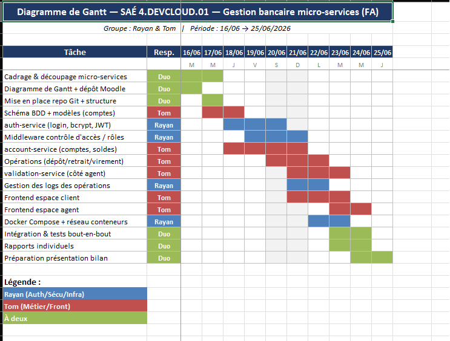

01 Contexte
02 Actions, traces & preuves
L'application de gestion bancaire repose entièrement sur une architecture où l'interface web ne fait qu'accéder à des API, chaque API portant une responsabilité claire. En binôme (Rayan & Tom), je me suis chargé du pôle authentification, sécurité et infrastructure :
- auth-service : authentification des usagers (client et agent) avec hachage des mots de passe par bcrypt et jetons JWT.
- Middleware de contrôle d'accès : limitation des accès aux interfaces et aux API selon le rôle (client / agent).
- Service de logs : chaque API publie ses logs, un service dédié les collecte via un service de messagerie et les stocke en base, avec affichage filtrable par type et par période.
- Orchestration : mise en place du Docker Compose et du réseau des conteneurs pour faire tourner l'ensemble des services ensemble (lien direct avec la compétence Orchestrer).
Mon binôme a pris en charge le pôle métier et frontend (comptes, opérations dépôt/retrait/virement, validation côté agent, interfaces client et agent).
Le projet a démarré par un diagramme de Gantt pour planifier les jalons sur deux semaines, et chaque membre a produit un rapport individuel argumentant la validation des apprentissages critiques.
Cette compétence prolonge directement Programmer (le code) et Orchestrer (le déploiement) : ici, l'accent est mis sur l'architecture de l'application elle-même.

Planification réelle du projet

03 SAÉ rattachée
Application de gestion bancaire en microservices
SAÉ 4.DevCloud.01Interface de gestion bancaire découpée en services indépendants : authentification, opérations clients, validation agent et journalisation centralisée par messagerie.